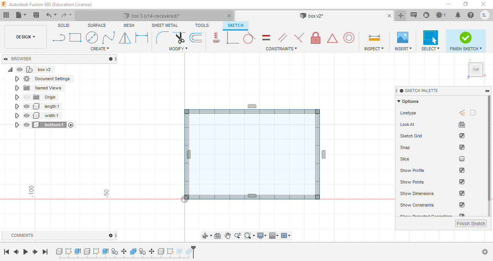

3D Modelling
In here i will be talking about how i used Fusion360 to create my projects
Navigation
[Horse Chess Piece][Laptop Stand]
[Music Box]
Excercise 1-Name Tag
These excercies were provided to us, for us to practice using fusion360 The first excercise was a name tag
I first drew out and extruded the base of the name tag

Next, the rims of the nametag were drawn using the offset function, before i extruded it

The text was then added and extruded

Final Product
Excercise 2-Lego Brick
The base of the lego brick was first sketched and then extruded

I then sketched the dots on the brick and extruded it, before using the patern fuction to create 7 more identical dots on the lego brick


The brick is then hollowed using the shell function, and 2 more collums were created at the bottom the the brick
Finally to finish up the lego brick, the edges of the top dots were filleted

Final Product
There is a full tutorial on youtube showing how to create the lego brick step by step. To watch the video click [here]
Excercise 3-Extrudes and Plains
The base of the object was first sketched out and extruded
Another sketch was then drawn on the first level of boxes, extruded and the process was repeated til the last level
The object is then hollowed with the shell function, finalising the product

Final Product
Horse Chess Piece
I first drew a sketch for the base of my horse chess piece, before revolving it.
Next, i inserted a canvas, traced the actual horse and extruded it
Finally to get my final product, i combined the base and the horse head
Final Product
[Click here to see how i 3D Printed it]
Laptop Stand
I first drew the stand for my laptop stand, extruded it and the mirrored it


I drew a sketch for the top of the laptop stand and extruded it, keeping in mind to make holes for the flanges of the legs
The front support and back support is then drawn with added slits to add support to the laptop stand
I then used to combine function in fusion360 to make slits into the legs to fit in the supports and hence creating the final product
Final Product
Music Box
Before even starting on my music box, i had to declare parameters of the box which includes the height,width, length and thickness.
I first drew a rectangle sketch using the parameters for length and height. The tabs were then drawn, using small rectangles at first and then muliplying it using the pattern function. the width of the tabs were the length of the parameter "thickness". Next, i extruded the rectangle, creating the length of the music box.
Next, i sketched width of the music box using the same method as the length, using parameters for the height, width and the tabs, and finalized the width by extruding it.
I then used the "move/copy" function, to copy the length of the music box, and moved it into place, creating the two lengths of the music box. I used the same method for the width of the music box , hence creating all 4 sides of the music box.
Finally, i sketched the base of the music box, extruded it and used the "combine" function to cut the base, creating the tabs on the base.

Next, for the lid to be fit ontop of my music box, i first drew 2 circles on the width of my music box with respect to the thickness of the wood. This is so that when the lid is cut out, the lid is able to fit into the hold. To finalise the lid, i added rectangles in the front and back and proceeded to extrude it.
I also added some designs to the front, a lotus which will be cut out, and a rose to the side which will be engraved. I did this by using the "canvas" function, and traced out the image onto my music box.